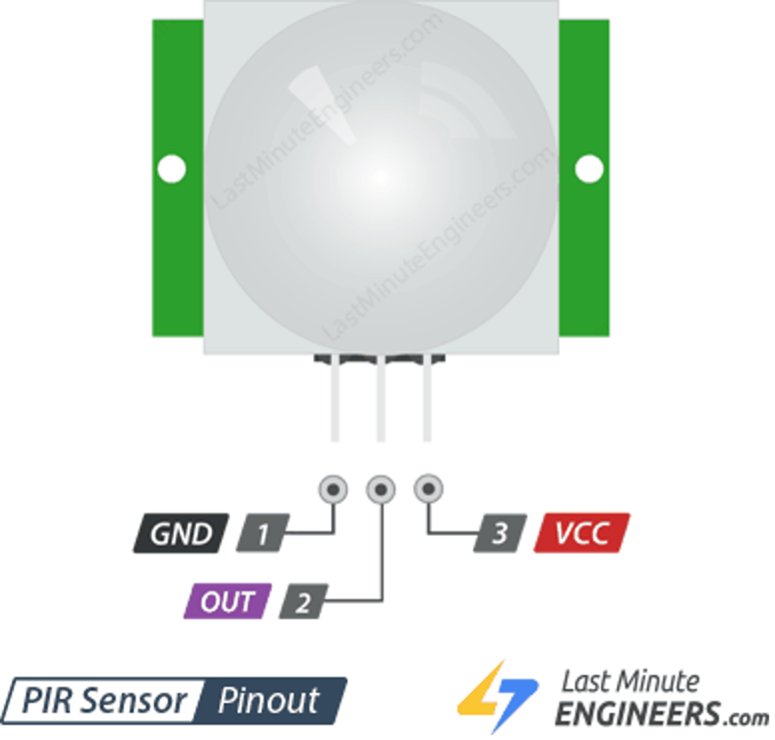
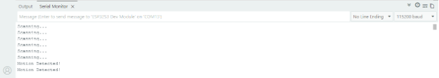
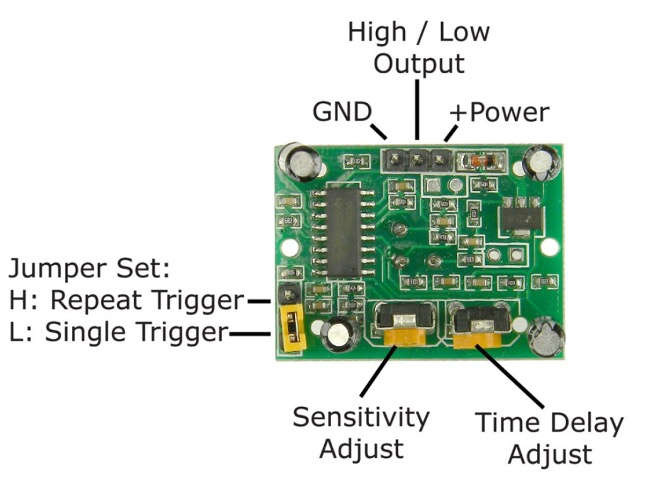

What you'll learn
- ✓ How a PIR motion sensor detects objects and movement nearby
- ✓ How to read HIGH and LOW digital signals from a sensor
- ✓ How to turn on an LED automatically when motion is detected
- ✓ How to show motion status live on the ST7789 display
Hardware needed
HC-SR501 PIR Sensor
Detects infrared heat from people and objects. One is in your kit.
ESP32 or Arduino
Your main development board. Pin numbers may vary between models.
LED
Lights up when motion is detected. Use the built-in LED or an external one.
Jumper wires
Three wires for the PIR (GND, VCC, signal) plus one for the LED.
ST7789 Screen
Optional — display motion status text instead of just an LED flash.
Wiring the HC-SR501
The PIR sensor only needs three wires. Connect GND and VCC to the power header on your board, and the signal wire to pin 13. The LED connects to pin 6.

Basic Arduino sketch
This sketch reads the PIR output every 500ms. When motion is detected the LED turns on and the Serial Monitor prints "Motion Detected!". When it's clear, the LED turns off and it prints "Scanning...".
// Define pins const int pirPin = 13; // PIR sensor output pin const int ledPin = 6; // LED pin void setup() { pinMode(pirPin, INPUT); // Set PIR pin as input pinMode(ledPin, OUTPUT); // Set LED pin as output Serial.begin(115200); Serial.println("Warming up sensor..."); // HC-SR501 needs ~30s to settle and learn the room delay(30000); Serial.println("Sensor Active"); } void loop() { int motionState = digitalRead(pirPin); if (motionState == HIGH) { digitalWrite(ledPin, HIGH); Serial.println("Motion Detected!"); } else { digitalWrite(ledPin, LOW); Serial.println("Scanning..."); } delay(500); // Avoid flooding the Serial Monitor }
Upload the sketch, wait for calibration, then walk in front of the sensor. The LED should light up and the Serial Monitor will show the detection events in real time.

Sensor settings & adjustments
If the sensor isn't behaving as expected, check the two orange potentiometers and the yellow jumper on the back of the board.

Sensitivity (SENS)
Adjusts detection distance — usually 3 to 7 metres. Turn clockwise to increase range.
Time Delay (TIME)
Controls how long the output stays HIGH after motion stops — usually 3 seconds to 5 minutes.
Trigger mode
L — Single trigger: resets after each detection; won't fire again until the time delay ends.
H — Repeatable trigger: the timer restarts on every new motion, keeping HIGH as long as movement continues.
Adding the ST7789 display
A single LED is fine, but you can also use the screen to show "Motion Detected!" or "No Motion Detected." directly on the display. This sketch handles both the sensor and the screen together.
#include <Adafruit_GFX.h> #include <Adafruit_ST7789.h> #include <SPI.h> // Display pins for ESP32-S3 (adjust if using different board) #define TFT_CS 0 #define TFT_RST 1 #define TFT_DC 45 #define TFT_MOSI 3 #define TFT_SCLK 46 #define TFT_MISO 10 #define PIR_PIN 13 Adafruit_ST7789 tft = Adafruit_ST7789(TFT_CS, TFT_DC, TFT_RST); void setup() { pinMode(PIR_PIN, INPUT); SPI.begin(TFT_SCLK, TFT_MISO, TFT_MOSI); tft.init(240, 320); Serial.begin(115200); tft.setRotation(1); tft.fillScreen(ST77XX_BLACK); tft.setCursor(60, 100); tft.setTextColor(ST77XX_GREEN); tft.setTextSize(3); tft.println("Calibrating Sensor"); delay(30000); tft.fillScreen(ST77XX_BLACK); } void loop() { int motionState = digitalRead(PIR_PIN); tft.setCursor(60, 100); tft.setTextColor(ST77XX_GREEN); tft.setTextSize(3); if (motionState) { tft.println("Motion Detected!"); } else { tft.println("No Motion Detected."); } delay(500); tft.fillScreen(ST77XX_BLACK); }
Once uploaded and calibrated, walk in front of the sensor and you'll see the status update on the screen every half second.